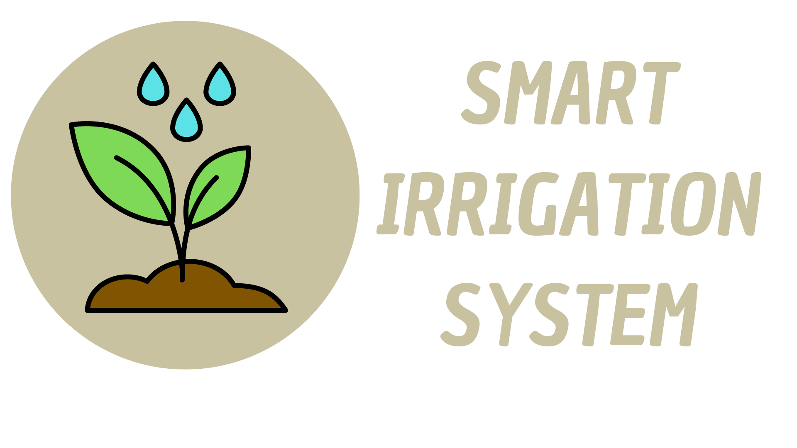

Smart Irrigation System

Por que automatizar a irrigação?
Redução consumo de água gasto no processo de irrigação
Permite o acionamento remoto dos aspersores
Mdição da umidade do solo em períodos pré-determinados
Mensuração do volume total gasto para a irrigação
Proporciona conforto ao usuário do sistema
Permite a conservação do ecossistema e dos reservatórios
Formação Profissional do Estudante
Curso
Período
Engenharia Elétrica
10º Período
Engenharia de Software
2º Período
Desenvolvedor de Software
1º Módulo
Deseja saber mais sobre?
Clique aqui!